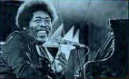

who's who
who's who  who's who
who's who  |
Johnny "Big Moose" WALKER27 июня 1929 года, Гринвилль,
Миссиссиппи -
Джонни "Биг Муз" ("Большой Лось") Уокер - американский блюзовый пианист, певец; представитель поколения, перенесшего Дельта-блюз в Чикаго. |
Как и другие пианисты, открывавшие эпоху послевоенного чикагского блюза САННИЛЭНД СЛИМ (SUNNYLAND SLIM) и ПАЙНТОП ПЕРКИНС (PINETOP PERKINS ), Джонни Уокер родился в Миссиссиппи и еще в юности играл на домашних вечеринка и в увеселительных заведениях Дельты. В последовавшие годы он значительно модернизировал свой стиль под очевидным влиянием ОТИСА СПЭННА (Otis SPANN), но сохранил в основе характернейшие приемы игры на фортепиано "баррел-хауз", свойственные Дельта-блюзу.
Уокер эмигрировал из Дельты в конце 40-х; выступал на юге штата Иллинойс вместе с барабанщиком КЭНЗАС СИТИ РЕРОМ (KANSAS CUTY RED) и гитаристом ИРЛОМ ХУКЕРОМ (Earl HOOKER). В 1953-1955гг.. проходил службу в ВС США. После демобилизации выступал в блюзбэнде ЛОУЭЛЛА ФУЛСОНА (Lowell FULSON). Около 1959г. переехал в Чикаго, где его исполнительский стиль, соединявший традиции и новые веяния, оказался очень кстати. Он аккомпанировал старым знакомым: Ирлу Хукеру и ЭЛМОРУ ДЖЕЙМСУ (Elmore JAMES); и реформаторам из следующего поколения чикагского блюза: МЭДЖИКУ СЭМУ (MAGIC SAM) и ОТИСУ РАШУ (Otis RUSH). И позже его фортепиано сопровождало на концертах и в студии гитары мастеров разных поколений: ДЖОНА ЛИ ХУКЕРА (John Lee HOOKER), ЛАЙТНИНГАХОПКИНСА (LIGHTNIN' HOPKINS), САНА СИЛЗА (Son SEALS), МАЙТИ ДЖО ЯНГА (MIGHTY Joe YOUNG), ДЖИММИ ДОКИНСА (Jimmy DAWKINS) и др. Но, кроме того, записывался как гитарист с Куртисом Джонсом (Curtis Jones), и гастролировал как бас-гитарист в блюзбэнде МАДДИ УОТЕРСА (MUDDY WATERS).
Еще в конце 50-х Джонни "Биг Муз" Уокер выпустил первые пластинки под собственным именем, и, пусть изредка, но продолжал выпускать записи до середины 80-х. Отчасти его сольным работам недостает индивидуальности. Но его чувство ритма, гармонии и исполнительская манера позволяют считать его записи идеальной школой блюзовой культуры игры на фортепиано.

1970 Ramblin
Woman ABC
1994 Swear
to Tell the Truth JSM
1996 Blue
Love Evidence
Бывшие новости |
Январь-Февраль 1999 |
Март 1999 |
Ноябрь-Декабрь 1999
Январь 2000 |
Февраль 2000 |
Март 2000 |
Апрель 2000